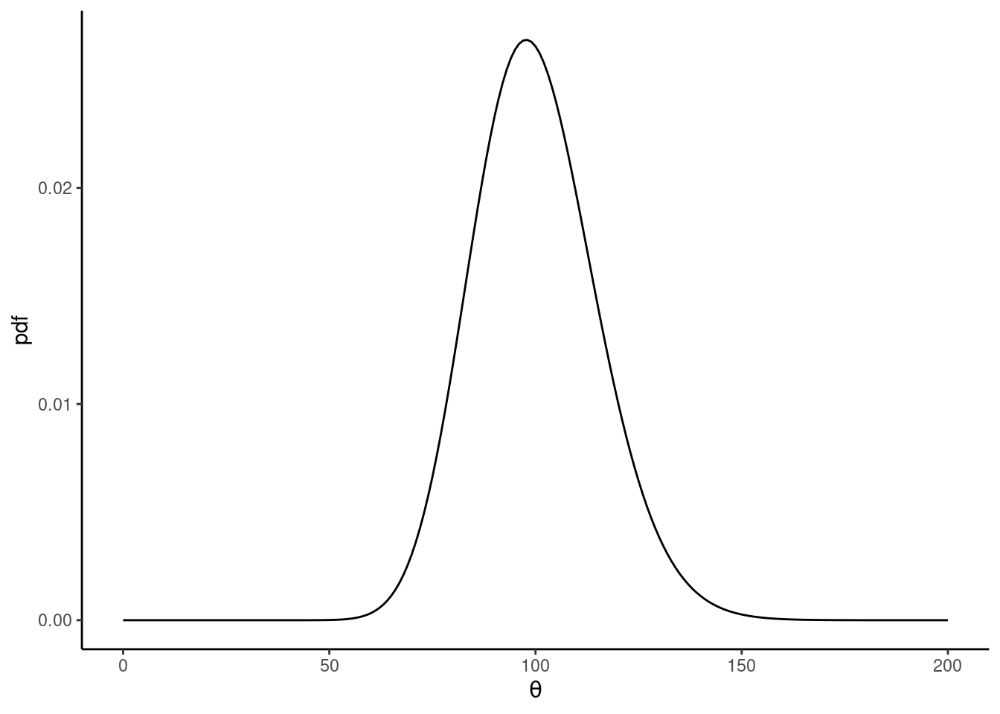
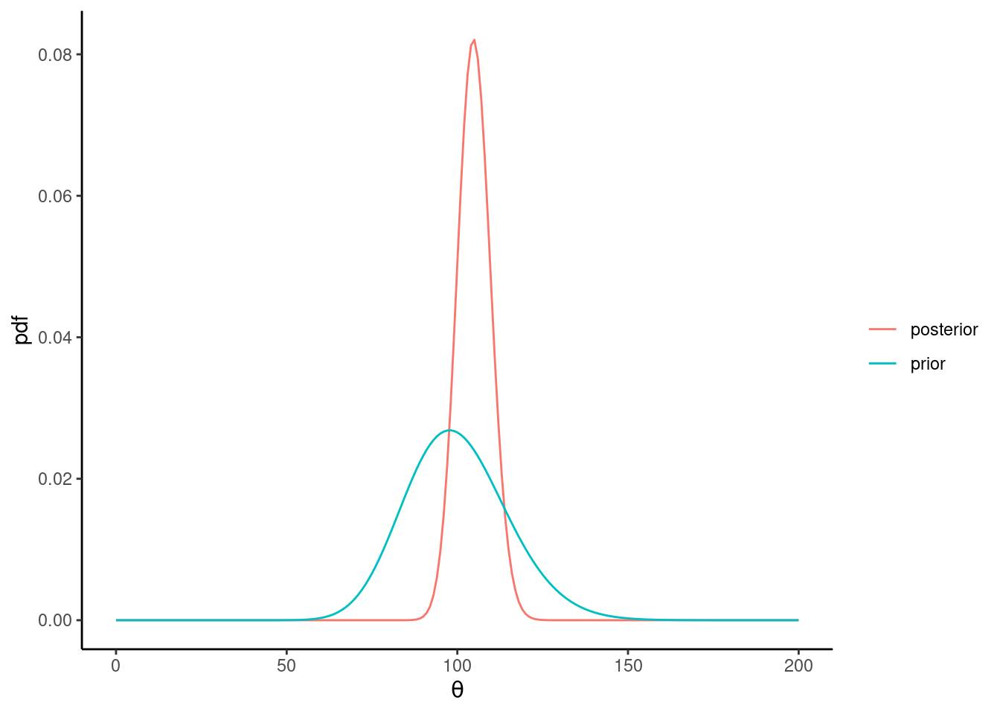
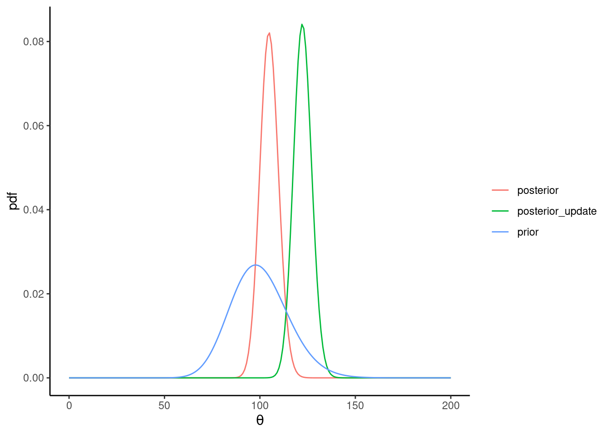

Exercises chapter 2
Exercise 2.1 Deriving Bayes’ rule
Let \(A\) and \(B\) be two observable events. \(P(A)\) is the probability that \(A\) occurs, and \(P(B)\) is the probability that
\(B\) occurs. \(P(A|B)\) is the conditional probability that \(A\) occurs given that \(B\) has happened. \(P(A,B)\) is the joint probability of \(A\) and \(B\) both occurring.
You are given the definition of conditional probability:
\[ \begin{equation} P(A|B)= \frac{P(A,B)}{P(B)} \hbox{ where } P(B)>0 \end{equation} \]
Using the above definition, and using the fact that \(P(A,B)=P(B,A)\) (i.e., the probability of
\(A\) and \(B\) both occurring is the same as the probability of \(B\) and \(A\) both occurring), derive an expression for
\(P(B|A)\). Show the steps clearly in the derivation.
\[ \begin{aligned} P(B|A) &= \frac{P(B,A)}{P(A)} \hbox{ where } P(A)>0 \\ &= \frac{P(A|B)P(B)}{P(A)} \end{aligned} \]
Exercise 2.2 Conjugate forms 1
Computing the general form of a PDF for a posterior
Suppose you are given data \(k\) consisting of the number of successes, coming from a \(\text{Binomial}(n,θ)\) distribution. Given \(k\) successes in \(n\) trials coming from a binomial distribution, we define a \(\text{Beta}(a,b)\) prior on the parameter \(θ\). Write down the Beta distribution that represents the posterior, in terms of \(a\), \(b\), \(n\), and \(k\).
\[ \begin{aligned} p(\theta | n,k) &\propto p(k |n,\theta) p(\theta) \\ \text{Beta}(a+k, b+n-k) &= \text{Binomial}(k|n,θ)\times\text{Beta}(\theta|a,b) \end{aligned} \]
Practical application
We ask 10 yes/no questions from a subject, and the subject returns 0 correct answers. We assume a binomial likelihood function for these data. Also assume a \(Beta(1,1)\) prior on the parameter \(θ\), which represents the probability of success. Use the result you derived above to write down the posterior distribution of the \(θ\) parameter.
\[ \text{Beta}(1+0, 1+10-0) = \text{Beta}(1, 11) \]
Exercise 2.3 Conjugate forms 2
Suppose that we perform \(n\) independent trials until we get a success (e.g., a heads in a coin toss). For coin tosses, the possible outcomes could be, H, T. The probability of success in each trial is \(θ\). Then, the Geometric random variable, call it \(X\), gives us the probability of getting a success in
\(n\) trials as follows:
\[ \begin{equation} Prob(X=n)=\theta(1-\theta)^{ n-1}\text{, where } n =1,2,... \end{equation} \] Let the prior on \(θ\) be \(Beta(a,b)\), a beta distribution with parameters \(a\),\(b\). The posterior distribution is a beta distribution with parameters \(a^*\) and \(b^*\). Determine these parameters in terms of \(a\), \(b\), and \(n\).
\[ \begin{aligned} p(\theta | n) &\propto p(n |\theta) p(\theta) \\ p(\theta | n) &\propto \theta(1-\theta)^{ n-1}\theta^{a-1}(1-\theta)^{b-1} \propto \theta^a(1-\theta)^{b+n-2} \\ p(\theta | n) &= Beta(a^*,b^*) = Beta(a+1,b+n-1) \end{aligned} \]
Exercise 2.4 Conjugate forms 3
The Gamma distribution is defined in terms of the parameters a, b: Ga(a,b). If there is a random variable \(Y\) (where \(y \gt 0\)) that has a Gamma distribution as a PDF (\(Y\sim \text{Gamma}(a,b)\)), then:
\[ \begin{equation} Ga(y | a,b)=\frac{b^a y^{a-1} \exp\{-by\}}{\Gamma(a)} \end{equation} \]
Suppose that we have \(n\) data points, \(x_1,…,x_n\), that are drawn from an exponentially distributed. The exponential likelihood function is:
\[ \begin{equation} p(x_1,\dots,x_n | \lambda)=\lambda^n \exp \{-\lambda \sum_{i=1}^n x_i \} \end{equation} \]
It turns out that if we assume a Ga(a,b) prior distribution for \(λ\) and the above Exponential likelihood, the posterior distribution of \(λ\) is a Gamma distribution. In other words, the Gamma(a,b) prior on the \(λ\) parameter in the Exponential distribution will be written:
\[ \begin{equation} Ga(\lambda | a,b)=\frac{b^a \lambda^{a-1} \exp\{-b\lambda\}}{\Gamma(a)} \end{equation} \]
Find the parameters \(a^′\) and \(b^′\) of the posterior distribution.
\[ \begin{aligned} p(\lambda | X) &\propto p(X |\lambda) p(\lambda) \\ p(\lambda | X) &\propto \lambda^n \exp \left\{-\lambda \sum_{i=1}^n x_i \right\}\lambda^{a-1} \exp\{-b\lambda\} \propto \lambda^{a+n-1} \exp \left\{-\lambda \left(\sum_{i=1}^n x_i + b\right)\right\}\\ p(\lambda | X) &= Ga(a^′,b^′) = Ga\left(a+n,b+\sum_{i=1}^n x_i \right) \end{aligned} \]
Exercise 2.5 Conjugate forms 4
Computing the posterior
This is a contrived example. Suppose we are modeling the number of times that a speaker says the word “I” per day. This could be of interest if we are studying, for example, how self-oriented a speaker is. The number of times
\(x\) that the word is uttered in over a particular time period (here, one day) can be modeled by a Poisson distribution (\(x=0,1,2,…\)):
\[ \begin{equation} f(x\mid \theta) = \frac{\exp(-\theta) \theta^x}{x!} \end{equation} \]
where the rate \(θ\) is unknown, and the numbers of utterances of the target word on each day are independent given \(θ\).
We are told that the prior mean of \(θ\) is 100 and prior variance for \(θ\) is 225. This information is based on the results of previous studies on the topic. We will use the Gamma(a,b) density (see previous question) as a prior for
\(θ\) because this is a conjugate prior to the Poisson distribution.
- First, visualize the prior, a Gamma density prior for \(\theta\) based on the above information.
[Hint: we know that for a Gamma density with parameters a, b, the mean is \(\frac{a}{b}\) and the variance is \(\frac{a}{b^2}\). Since we are given values for the mean and variance, we can solve for a,b, which gives us the Gamma density.]
\[ \left. \begin{array}{l} \frac{a}{b} = 100 \\ \frac{a}{b^2} = 225 \end{array} \right\} \Longrightarrow \left. \begin{array}{l} a= \frac{100 \times 100}{225} \\ b= \frac{100}{225} \end{array} \right\} \]
- Next, derive the posterior distribution of the parameter \(θ\) up to proportionality, and write down the posterior distribution in terms of the parameters of a Gamma distribution.
\[ \begin{aligned} p(\theta | X) &\propto p(X |\theta) p(\theta) \\ p(\theta | X) &\propto \prod_{i=1}^{n} \exp(-\theta) \theta^{x_i} \times \theta^{a-1} \exp\{-b\theta\} \\ &\propto \exp(-n\theta)\theta^{\sum_{i=1}^{n}x_i}\theta^{a-1} \exp\{-b\theta\}\\ &\propto \exp(-(n+b)\theta)\theta^{a-1+\sum_{i=1}^{n}x_i}\\ p(\theta | X) &= Ga(a^*,b^*) = Ga\left(a + \sum_{i=1}^n x_i, b + n \right), \end{aligned} \]
Practical application
Suppose we know that the number of “I” utterances from a particular individual is \(115,97,79,131\). Use the result you derived above to obtain the posterior distribution. In other words, write down the parameters of the Gamma distribution (call them \(a^∗\),\(b^∗\)) representing the posterior distribution of \(θ\) .

Now suppose you get one new data point: 200. Using the posterior \(Gamma(a^∗,b^∗)\) as your prior, write down the updated posterior (in terms of the updated parameters of the Gamma distribution) given this new data point. Add the updated posterior to the plot you made above.

Exercise 2.6 The posterior mean is a weighted mean of the prior mean and the MLE (Poisson-Gamma conjugate case)
The number of times an event happens per unit time can be modeled using a Poisson distribution, whose PMF is:
\[ \begin{equation} f(x\mid \theta) = \frac{\exp(-\theta) \theta^x}{x!} \end{equation} \]
Suppose that we define a Gamma(a,b) prior for the rate parameter \(θ\). It is a fact (see exercises above) that the posterior of the \(θ\) parameter is a \(Gamma(a^∗,b^∗)\) distribution, where \(a^∗\) and \(b^∗\) are the updated parameters given the data: \(θ∼Gamma(a^∗,b^∗)\).
- Prove that the posterior mean is a weighted mean of the prior mean and the maximum likelihood estimate (mean) of the Poisson-distributed data, \(\bar{x} = \sum_{i=1}^n x/n\). Hint: the mean of a Gamma distribution is \(\frac{a}{b}\).
Specifically, what you have to prove is that:
\[ \frac{a^*}{b^*} = \frac{a}{b} \times \frac{w_1}{w_1 + w_2} + \bar{x} \times \frac{w_2}{w_1 + w_2} \tag{2.1}\]
where \(w_1=1\) and \(w_2=\frac{n}{b}\)
\[ \begin{aligned} p(\theta | X) &= Ga(a^*,b^*) = Ga\left(a + \sum_{i=1}^n x_i, b + n \right) \\ \mathbb{E}[\theta|X] &= \frac{a^*}{b^*} = \frac{a + \sum_{i=1}^n x_i}{b + n}\\ & = \frac{\frac{a}{b}+\bar{x}\frac{n}{b}}{1+\frac{n}{b}} = \\ &= \frac{a}{b}\frac{1}{1+\frac{n}{b}}+\bar{x}\frac{\frac{n}{b}}{1+\frac{n}{b}} \end{aligned} \]
- Given equation Equation 2.1, show that as \(n\) increases (as sample size goes up), the maximum likelihood estimate \(\bar{x}\) dominates in determining the posterior mean, and when \(n\) gets smaller and smaller, the prior mean dominates in determining the posterior mean.
\[ \begin{aligned} \lim_{n \to \infty}\mathbb{E}[\theta|X] &= \bar{x}\\ \lim_{n \to 0}\mathbb{E}[\theta|X] &= \frac{a}{b}\\ \end{aligned} \]
- Finally, given that the variance of a Gamma distribution is \(\frac{a}{b^2}\), show that as \(n\) increases, the posterior variance will get smaller and smaller (the uncertainty on the posterior will go down).
\[ \begin{aligned} \mathbb{V}[\theta|X] &= \frac{a*}{b*^2} = \frac{a + \sum_{i=1}^n x_i}{(b + n)^2} = \frac{a + n\bar{x}}{(b + n)^2}\\ \lim_{n \to \infty}\mathbb{V}[\theta|X] &= 0\\ \end{aligned} \]